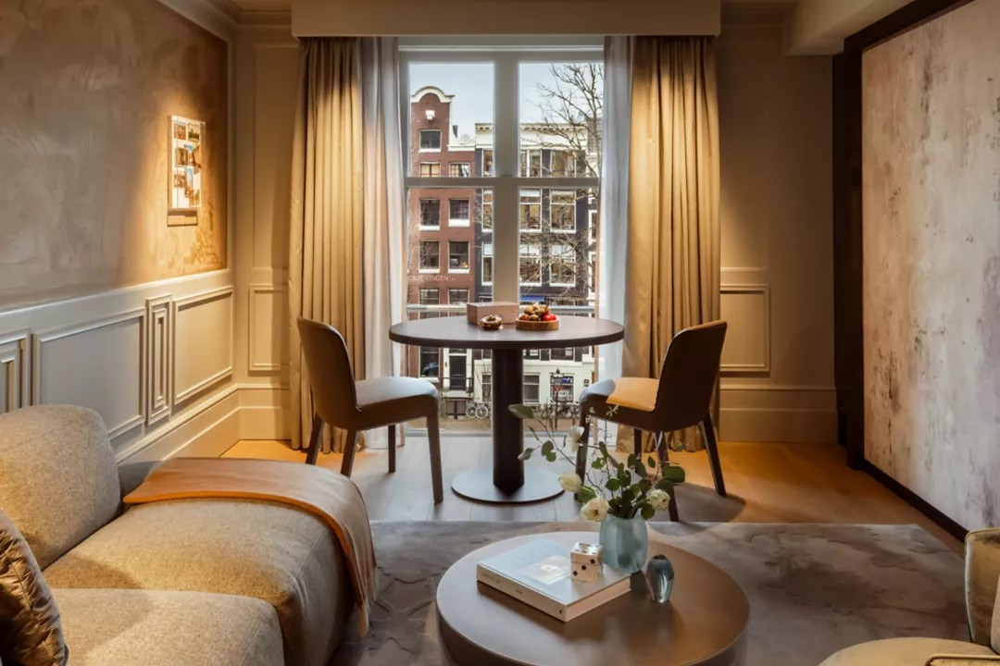

Wat ze gemeen hebben met het nieuwe Rosewood Hotel, dat op 1 mei zijn deuren opent aan de Prinsengracht, is dat hun tweepersoonskamers beginnen bij:
cultuur

Vijf sterren is passé: Het Amsterdamse zessterrenhotel
In Amsterdam opent volgende maand het Rosewood Hotel zijn deuren, een zogenoemd zessterrenhotel, dat zich richt op de reiziger die luxe gewend is. Maar wat moeten we ons voorstellen bij zes sterren? Hoe ziet die service eruit? We gingen te rade bij experts in de wereld van de haute hôtellerie.
Even ontnuchteren. Een zessterrenhotel? Dat bestaat niet. Er is geen enkele instantie die die kwalificatie verstrekt. Het CBS telt in Amsterdam 31 vijfsterrenhotels met een zeer compleet aanbod. Maar daaronder zijn een paar hotels die blijkbaar nóg een stapje extra doen voor de gast. Zes sterren, dus hors catégorie.
Mogelijk kan het Amsterdamse Conservatorium Hotel, uit 2011, zich zo kwalificeren. Het Waldorf Astoria valt er zeker onder. Dat hotel opende in 2014 de deuren en is onderdeel van Hilton Worldwide.
€0
per nacht
Maar het Rosewood heeft ook een suite van 141 vierkante meter, die vijftien keer zoveel kost. Die heeft een slaapkamer, een woonkamer en een eetkamer en uitzicht op de toren van de Westerkerk.

1 x LIBRARY HOUSE
Privésuite - nog 1 beschikbaar!
Kenmerken:
- 141 m²
- 1 Kingsize bed
Geen zorgen er zijn geen kosten als je op deze knop drukt!

Geen script
De Rosewood Hotel Group is een hotelketen met 55 hotels in 24 landen, eigendom van de steenrijke Hongkongse vastgoedfamilie Cheng.
Sonia Cheng, kleindochter van de pater familias, Henry Cheng, leidt het bedrijf. In 2011 nam de familie de van oorsprong Amerikaanse Rosewood-keten over.
Sindsdien is Sonia Cheng bezig de hotels onder de Rosewood-vlag (de groep heeft ook nog andere merken) in een straf tempo uit te breiden. Op de site van het bedrijf wordt het merk omschreven als ultra-luxury.
Wat betekent dat? Wat omvat die fameuze zessterrenservice? Dat probeert Thomas Harlander, directeur van het Amsterdamse Rosewood, die voorafgaand aan de opening al tweeënhalf jaar op zijn post zit, zo goed mogelijk uit te leggen. ‘Elk luxehotel heeft zijn eigen credo en missie’, zegt Harlander. ‘In het Rosewood geven we iedere gast een tailormade behandeling. Waarom zou je iedereen hetzelfde behandelen? Er is geen script.’
Een voorbeeld van zo’n persoonlijke benadering kan hij wel geven. ‘De butler heeft ontdekt dat jouw favoriete parfum bijna op is. Kan gebeuren toch? Als je uitcheckt staat er een fris flesje, mooi verpakt. Dan hoef je niet zelf naar de winkel te gaan.’
Steeds meer luxe hotels in de hoofdstad
Luxe-/vijfsterrenhotels in Amsterdam
Voor 1980
1980-2010
Vanaf 2010
Niet in het reisprogramma
Het is nog niet zo lang dat Amsterdam meedraait in de wereld van de exclusieve service voor een select gezelschap reizigers. Natuurlijk bezat de hoofdstad altijd al heel fraaie hotels waar de rich and famous neerstreken als ze hier waren uitgenodigd. Denk aan het Amstel Hotel. Maar voor een bepaalde groep welgestelde kosmopolieten zat Amsterdam tot voor kort eenvoudigweg niet in het reisprogramma.
Harlander: ‘Amsterdam is zeker niet Londen, niet Parijs, niet New York, wat luxury betreft. Het is er wel, maar niet in your face. Dit is een stad om te ontdekken. Elke hoek, elke wijk is anders. Naar mijn mening is het aanbod aan restaurants en bars dramatisch verbeterd de laatste jaren. Is het wereldklasse? Dat is niet aan mij om te beoordelen, maar ik zie veel veranderingen.’
Die ziet Roberto Payer ook, een zeer ervaren collega van Harlander, die inmiddels met pensioen is. Payer was directeur van het Hilton Hotel in de stad toen hij kort na de kredietcrisis het idee lanceerde voor een Waldorf Astoria in Amsterdam. ‘Dat merk bestond helemaal niet, ook niet in Amerika. Het was vooral een legende’, zegt hij, doelend op het beroemde Waldorf Astoria-hotel in New York. Payer: ‘Mijn baas dacht dat ik gek geworden was. Ze geloofden niet in luxury in Amsterdam. Amsterdam kende geen luxury. Wel een goed hotel, ja. Maar niet luxury.’
Twee Michelinsterren
Dat brengt ons bij een belangrijk onderdeel: food and beverage. Het nieuwe Rosewood krijgt een bar met de naam Advocatuur, waar je Indiase snacks kunt krijgen uit de tandoori-oven, voor bij een huisgemaakte gin/jenever met de naam Provo. De op maat gemaakte distilleerinstallatie staat in de bar en is een kunstwerk op zich.
Het hotel herbergt ook een Indiase businessclub, een wens van de overleden burgemeester Eberhard van der Laan, waar het hotel zich aan moest houden. Daarnaast is er restaurant The Court, in de lobbylounge, een ruimte voor evenementen én een hoofdrestaurant, Eeuwen geheten. Als je inhouse dining meetelt (de suites hebben een eetkamer) zijn er vijf plekken in het hotel waar je iets kunt eten of drinken.
Carnaval en gala’s
‘Vijf eetgelegenheden? Dan wens ik ze veel sterkte’, reageert Krooswijk, die nog wel een tip heeft voor het Rosewood. ‘Toen we bij hotel De l’Europe na een ingrijpende verbouwing opengingen, hebben we ervoor gezorgd dat het restaurant binnen een jaar weer twee Michelin-sterren kreeg. Dat is heel belangrijk voor de Amerikaanse markt.’
Hoe denkt Thomas Harlander van het Rosewood daarover? ‘Er zijn hotels die hun pink afhakken voor een ster, maar als mijn gasten een Michelin-sterrenervaring willen, stuur ik ze wel door naar mijn vrienden in De l’Europe en het Waldorf’, zegt hij. ‘Het is heel moeilijk met een Michelin-sterrenrestaurant geld te verdienen. In Azië, vooral in Japan, zie je dat chefs geen ster meer willen. Ze hebben ze niet nodig. We zeggen er geen nee tegen, maar een Michelin-ster is niet hetzelfde als succes. Wij gaan onze restaurants vanaf dag één zo opzetten dat ze financieel succesvol zijn.’
Armenhuis
De ingewikkelde en ingrijpende verbouwing van het monumentale pand aan de Prinsengracht vormt een van de redenen waarom de oplevering van het Rosewood zo lang op zich heeft laten wachten. De basis is een 17de-eeuws armenhuis. Tussen 1666 en 1829 woonden hier duizenden vondelingen, wezen en verstoten kinderen.
Daarna werd het gebouw radicaal verbouwd in strengclassicistische stijl. Het moest macht uitstralen. Tot 2013 zat hier het gerechtshof Amsterdam. In 2015 gaf de gemeente groen licht voor de omvorming van het paleis van justitie tot een ‘zeer onderscheidend hotel’, maar door lange bezwaarprocedures kon de renovatie pas in 2020 van start.
Studio Piet Boon heeft het hotel een Amsterdams uiterlijk gegeven, onder meer met Amsterdamse kunst. Denk aan foto’s van Herman Brood en Candy Dulfer van de hand van Anton Corbijn, werk van Erwin Olaf en van Streetart Frankey.
Die laatste is een kunstenaar die gevraagd en ongevraagd beelden toevoegt aan de openbare ruimte in Amsterdam. Boon is een groot fan. ‘Alle hotels van de Rosewood-groep hebben een sense of place’, verklaart Boon. ‘In het Rosewood in het Italiaanse Montalcino voel je: dit is Toscane. Als je binnenkomt op de Prinsengracht, moet je direct weten: dit is Amsterdam. Dat vind ik heel goed gelukt.’
Het Rosewood is superhigh-end, maar dat is niet hetzelfde als overdreven luxe, vindt Boon. ‘Het Rosewood wil ook een hotel zijn voor de buurt. Dat je er, als je daar om de hoek woont, lekker in de tuin gaat zitten en een kop koffie gaat drinken.’